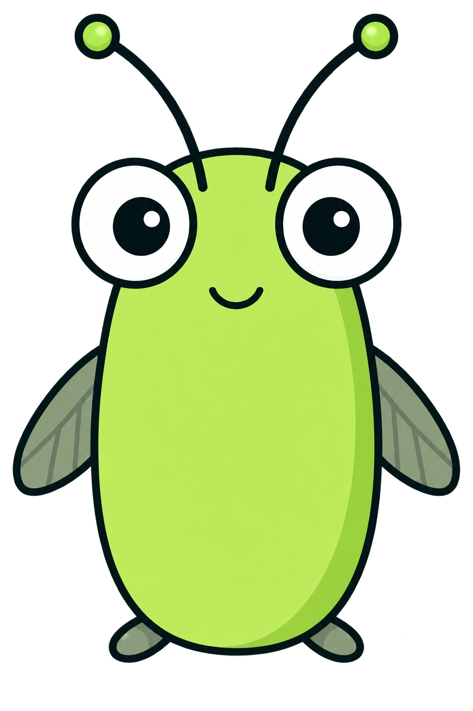

⌕
Ctrl F
cluster
…
0
resources
0
relationships
0
namespaces
Sign out
Fit
Expand all
Overview
LIVE
Sync
Last synced —
⚠ Connection lost — showing data from
—
, retrying…
3 sec
10 sec
30 sec
1 min
5 min
Manual
Sync now
⌕
Ctrl F
↑
↓
Copy
✕
Connecting to your cluster…
Reading resources and relationships.